|
Roda JC - RBC (0-2) 30 augustus 2003 |
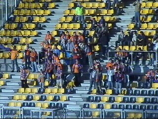
100 RBC-fans in een onverwacht zonnig PLS.
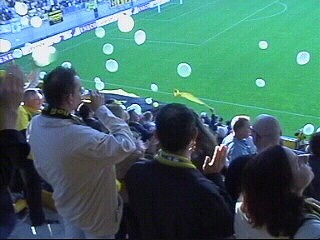
De Vunki-crew zorgde voor een geslaagde
ballonnen-sfeeractie.
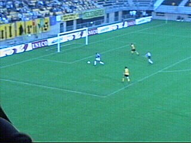
RBC kreeg tot grote verbazing kans na kans. In
de 18e min. is het dan zo ver: 0-1 door Youssouf.
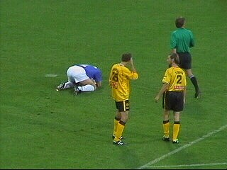
De Roosendaalers stortten veelvuldig ter aarde.
Hier is Brouwers met een RBC'er gebotst.
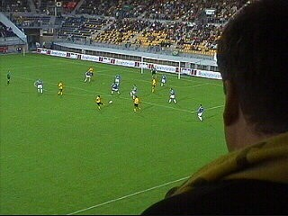
Roda werd moedeloos van de Brabantse muur.
Hier probeert Addo het met een kanonskogel die
ongeveer een meter naast zwaaide.
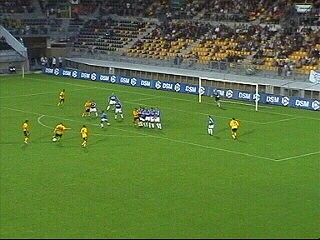
Een vrijetrap die geblokt werd. Niks lukte!
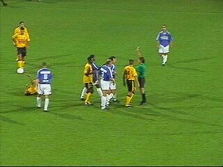
Geel voor Tininho. Van Dessel was even later
ook aan de beurt.
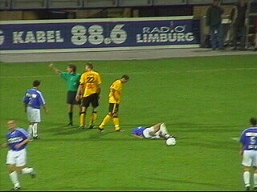
De RBC'ers gingen er steeds vaker bij liggen.
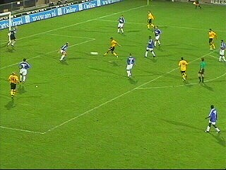
Uitstekende bal van Van Dessel.....
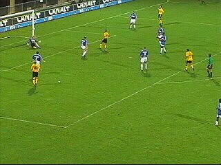
..... die tussen de benen van Maikel Aerts gaat
en vervolgens op de paal ketst.
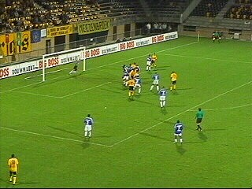
In de slotfase volgen er spannende momenten
als Roda een aantal vrijetrappen en corners
krijgt. De muur van RBC blijft echter overeind.
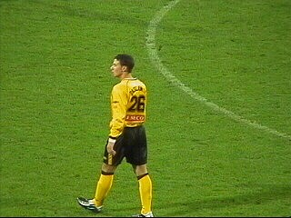
Baslanti vervangt Berglund (82') nadat al eerder
Brouwers en Addo vervangen werden door
Van Dijk en Vicelich.
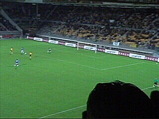
In de 89e min. counterde RBC zich definitief
naar de zege via een goal van Daelemans.
Jacobus heeft zich een ruiger uiterlijk
aangemeten.
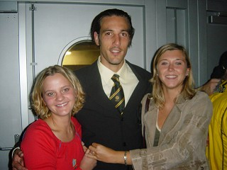
Het was niet erg druk in de KO. Van de spelers
kwamen slechts Roorda en Vicelich.
De Poolse dames, Agnieszka en Camilla waren
vooral onder de indruk van het reusachtige postuur
van Ivan.
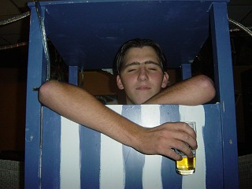
Omdat de KO erg snel leegstroomde gingen we
afbieren in "de Boemel" waar Rik E zich in
een strandhokje terugtrok om het verdriet te
verwerken.
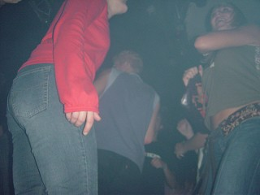
Daarna de nederlaag "afschudden" in La Cave,
gelegen in het stadje Roermond.
Roda valt door deze teleurstellende nederlaag
terug naar de bekende grauwe middenmoot.